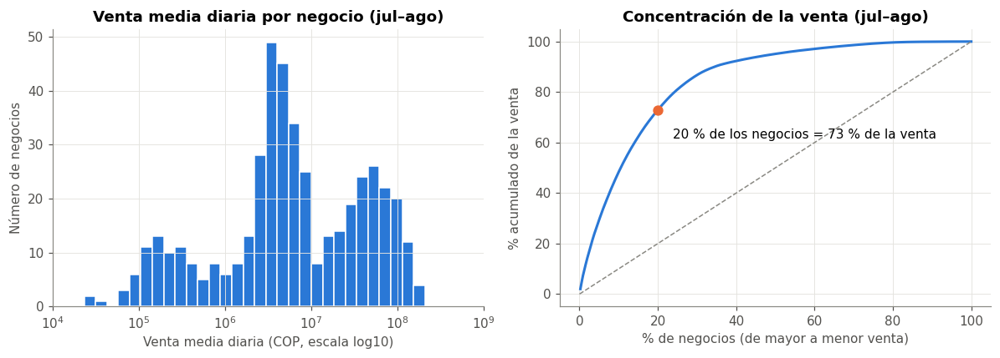

📘 1. Base de datos#
Este capítulo presenta el problema, de dónde vienen los datos, qué contiene cada variable, cómo está estructurada la base, su tamaño real, su calidad y las consideraciones éticas. Los números salen del panel limpio que se construye en el capítulo 2.
🎯 1.1 Problema y justificación#
Problema. Pronosticar la venta diaria total de cada negocio a partir de su propia historia reciente, incluida la venta por medio de pago de los días anteriores. El horizonte propuesto es el día siguiente y se fija en el capítulo 3.
Contexto. Los negocios son estaciones de servicio (EDS), tiendas de conveniencia y KCOs (kioscos: máquinas de autoservicio de snacks y bebidas) operados por Masser, operadora de la marca Terpel. La venta se registra por medio de pago (efectivo, datáfono, créditos corporativos como Rumbo o Mi Empresa, etc.) en varios sistemas de punto de venta.
Justificación.
Por qué importa |
Detalle |
|---|---|
Uso operativo |
Un pronóstico diario por negocio sirve para planear personal, inventario y metas comerciales, y para detectar días anómalos (una venta muy distinta de lo esperado). |
Interés como problema de ML |
Son cientos de series cortas y muy heterogéneas (la venta media por negocio varía en varios órdenes de magnitud), con patrón semanal. Obliga a cuidar la validación temporal y la fuga de datos. |
Tipo de tarea |
Regresión sobre un panel temporal: una observación por negocio y día. |
Todos los medios de pago cuentan como venta, incluidos los de crédito. El objetivo es la venta, no el momento en que el dinero entra a caja.
from pathlib import Path
import numpy as np
import pandas as pd
import matplotlib.pyplot as plt
SEED = 42
np.random.seed(SEED)
DATA = Path("../../Data")
# paleta del libro (la misma en todos los capítulos)
PALETA = ["#2a78d6", "#eb6834", "#1baf7a", "#eda100", "#e87ba4", "#008300", "#4a3aa7", "#e34948"]
AZUL, NARANJA = PALETA[0], PALETA[1]
plt.rcParams.update({
"figure.dpi": 110, "font.size": 10,
"axes.prop_cycle": plt.cycler(color=PALETA),
"axes.spines.top": False, "axes.spines.right": False,
"axes.grid": True, "grid.color": "#e4e3df", "grid.linewidth": 0.6,
"axes.edgecolor": "#8a8983", "axes.labelcolor": "#52514e",
"xtick.color": "#52514e", "ytick.color": "#52514e",
"axes.titleweight": "bold", "axes.titlesize": 12,
})
pd.set_option("display.float_format", "{:,.2f}".format)
panel = pd.read_csv(DATA / "processed" / "panel_negocio_dia.csv", parse_dates=["fecha"])
print(f"panel: {panel.shape[0]:,} filas x {panel.shape[1]} columnas")
panel: 37,828 filas x 14 columnas
🏢 1.2 Fuente, licencia y disponibilidad#
Aspecto |
Detalle |
|---|---|
Fuente |
Datos internos de Masser (operadora de Terpel): recibos de venta de los sistemas de punto de venta TPos, Sckuba, Satélite (GNV, Canastilla, LIQ) y registros manuales, ya agregados por negocio, día y medio de pago. Incluye el catálogo de medios de pago ( |
Periodo |
1 de julio al 24 de septiembre de 2026 (se usa hasta el 23; ver 2.4) |
Licencia / permiso |
Uso autorizado por la empresa con fines académicos e investigativos, y con posible uso empresarial posterior. |
Disponibilidad |
La base no es pública y el repositorio no contiene datos. Está en una carpeta privada de OneDrive. El profesor puede solicitar acceso al autor, y el acceso se concede tras tramitar la autorización con la empresa. |
Reproducibilidad |
El código completo está en los notebooks y las semillas están fijas ( |
Advertencia
Como la base no es pública, un lector sin acceso autorizado no puede re-ejecutar los notebooks. Por eso el libro se publica con las salidas guardadas y documenta cada paso de limpieza en el capítulo 2.
📖 1.3 Diccionario de variables#
Datos crudos (una fila por fuente × negocio × día × medio de pago)#
Variable |
Tipo |
Descripción |
|---|---|---|
|
categórica (6 niveles) |
Sistema de origen: TPos Recibos, Sckuba, Satélite Ventas GNV / Canastilla / LIQ, Manual |
|
identificador |
Código interno del negocio (se anonimiza como |
|
fecha |
Día de la venta (sin hora) |
|
categórica (19 usados de 26) |
Medio de pago; su nombre y categoría salen del catálogo |
|
texto → numérica (COP) |
Valor vendido en ese día y medio de pago. Formato |
Panel limpio (una fila por negocio × día)#
# [IA] diccionario del panel: tipo, rol y descripción de cada columna
dicc = pd.DataFrame([
("negocio", "identificador", "Negocio anonimizado (N001…N453)", "Agrupa la serie; no es predictor"),
("fecha", "fecha", "Día de la venta", "Índice temporal; de aquí salen variables de calendario"),
("pm_efectivo", "numérica (COP)", "Venta en efectivo", "Predictor solo como rezago"),
("pm_datafono", "numérica (COP)", "Venta con datáfono (tarjetas)", "Predictor solo como rezago"),
("pm_rumbo", "numérica (COP)", "Venta con crédito corporativo Rumbo", "Predictor solo como rezago"),
("pm_mi_empresa", "numérica (COP)", "Venta con crédito corporativo Mi Empresa", "Predictor solo como rezago"),
("pm_credito_clientes", "numérica (COP)", "Venta a crédito propio del negocio", "Predictor solo como rezago"),
("pm_otros", "numérica (COP)", "Suma de los 14 medios que pesan < 1 %", "Predictor solo como rezago"),
("cat_contado", "numérica (COP)", "Venta de contado (según el catálogo)", "Solo descriptiva"),
("cat_credito_propio", "numérica (COP)", "Venta a crédito propio", "Solo descriptiva"),
("cat_credito_empresa", "numérica (COP)", "Venta con créditos corporativos", "Solo descriptiva"),
("venta_total", "numérica (COP)", "Suma de todos los medios y fuentes del día", "**Variable objetivo**"),
("n_fuentes", "entera", "Número de sistemas que reportaron ese día", "Control / posible predictor"),
("sin_registro", "binaria", "1 si el día no tenía filas (venta 0 por regla del negocio)", "Control / posible predictor"),
], columns=["variable", "tipo", "descripción", "rol"])
# verifico que el diccionario cubra exactamente las columnas del panel
print("columnas sin documentar:", set(panel.columns) - set(dicc["variable"]))
dicc.set_index("variable")
columnas sin documentar: set()
| tipo | descripción | rol | |
|---|---|---|---|
| variable | |||
| negocio | identificador | Negocio anonimizado (N001…N453) | Agrupa la serie; no es predictor |
| fecha | fecha | Día de la venta | Índice temporal; de aquí salen variables de ca... |
| pm_efectivo | numérica (COP) | Venta en efectivo | Predictor solo como rezago |
| pm_datafono | numérica (COP) | Venta con datáfono (tarjetas) | Predictor solo como rezago |
| pm_rumbo | numérica (COP) | Venta con crédito corporativo Rumbo | Predictor solo como rezago |
| pm_mi_empresa | numérica (COP) | Venta con crédito corporativo Mi Empresa | Predictor solo como rezago |
| pm_credito_clientes | numérica (COP) | Venta a crédito propio del negocio | Predictor solo como rezago |
| pm_otros | numérica (COP) | Suma de los 14 medios que pesan < 1 % | Predictor solo como rezago |
| cat_contado | numérica (COP) | Venta de contado (según el catálogo) | Solo descriptiva |
| cat_credito_propio | numérica (COP) | Venta a crédito propio | Solo descriptiva |
| cat_credito_empresa | numérica (COP) | Venta con créditos corporativos | Solo descriptiva |
| venta_total | numérica (COP) | Suma de todos los medios y fuentes del día | **Variable objetivo** |
| n_fuentes | entera | Número de sistemas que reportaron ese día | Control / posible predictor |
| sin_registro | binaria | 1 si el día no tenía filas (venta 0 por regla ... | Control / posible predictor |
Interpretación#
La variable objetivo es venta_total. La venta por medio de pago del mismo día suma exactamente el objetivo, así que usarla como predictor sería fuga de datos directa: por eso los medios solo pueden entrar como rezagos (días anteriores). Las columnas cat_* son otra forma de sumar los mismos montos y se dejan solo para describir los datos.
🧱 1.4 Estructura#
Aspecto |
Valor |
|---|---|
Unidad de observación |
negocio × día |
Tipo |
Panel temporal desbalanceado: muchas series diarias, una por negocio, y no todas cubren el periodo completo |
Frecuencia |
Diaria, sin huecos dentro del periodo activo de cada negocio (los días sin venta se completaron con 0, ver 2.8) |
Periodo |
1 jul – 23 sep 2026 (85 días, 12 semanas + 1 día) |
dias_neg = panel.groupby("negocio")["fecha"].agg(inicio="min", fin="max", dias="size")
inicio, fin = panel["fecha"].min(), panel["fecha"].max()
tipo = np.select(
[(dias_neg["inicio"] == inicio) & (dias_neg["fin"] == fin), dias_neg["inicio"] > inicio],
["periodo completo", "entra tarde (recibido de franquicia)"],
default="sale antes (entregado en franquicia)")
estructura = pd.Series(tipo, index=dias_neg.index).value_counts().rename("negocios").to_frame()
estructura["días de historia (mediana)"] = [dias_neg.loc[tipo == t, "dias"].median() for t in estructura.index]
estructura
| negocios | días de historia (mediana) | |
|---|---|---|
| periodo completo | 431 | 85.00 |
| entra tarde (recibido de franquicia) | 12 | 52.00 |
| sale antes (entregado en franquicia) | 9 | 73.00 |
Interpretación#
Casi todos los negocios cubren los 85 días. Unos pocos entran o salen por cambios de franquicia, así que el panel es desbalanceado. Esto importa para la validación: una partición cronológica deja negocios que aparecen solo en test o que solo están en train, y así se tratarán en el capítulo 3.
📏 1.5 Tamaño y tamaño efectivo de muestra#
El enunciado pide al menos 20 000 observaciones y que se reporten \(n\), \(p\) y el número de entidades independientes.
# [IA] p = columnas del panel que pueden ser predictores (sin id, fecha, objetivo ni las cat_* que son redundantes)
predictores_base = [c for c in panel if c.startswith("pm_")] + ["n_fuentes", "sin_registro"]
n = len(panel)
p = len(predictores_base) + 1 # +1 por el día de la semana que sale de la fecha
entidades = panel["negocio"].nunique()
tamano = pd.Series({
"n (filas negocio-día)": f"{n:,}",
"p (predictores base)": p,
"n / p": f"{n / p:,.0f}",
"entidades independientes (negocios)": entidades,
"entidades / p": f"{entidades / p:.1f}",
"días por negocio (mediana)": int(dias_neg["dias"].median()),
}).to_frame("valor")
tamano
| valor | |
|---|---|
| n (filas negocio-día) | 37,828 |
| p (predictores base) | 9 |
| n / p | 4,203 |
| entidades independientes (negocios) | 452 |
| entidades / p | 50.2 |
| días por negocio (mediana) | 85 |
Interpretación#
Con \(n\) = 37 828 filas se cumple el mínimo de 20 000. Pero las filas no son independientes: los días de un mismo negocio están muy correlacionados entre sí (el negocio que vende mucho hoy vende mucho mañana).
Nota
Tamaño efectivo de muestra. La unidad independiente es el negocio (452), no la fila. Con 85 días por negocio hay mucha información sobre la dinámica de cada serie, pero poca sobre cómo varían los negocios entre sí. Por eso: (1) la validación debe respetar el tiempo (nada de k-fold aleatorio), y (2) las métricas y sus intervalos se interpretan con 452 entidades en mente, no con 37 mil.
El \(p\) base es pequeño (6 medios + 2 controles + día de la semana). El \(p\) final crece cuando se crean rezagos (cap. 7), pero seguirá muy por debajo de \(n\).
🔍 1.6 Calidad de los datos#
El detalle está en el capítulo 2. Este es el resumen:
Aspecto |
Hallazgo |
Mecanismo / causa |
Tratamiento |
|---|---|---|---|
Nulos |
0 en los datos crudos |
— |
— |
Días sin fila |
197 negocio-días dentro del periodo activo de 44 negocios |
Conocido: el negocio no vendió (regla del negocio). No es faltante aleatorio: es un cero estructural |
Venta 0 + marca |
Días antes o después del periodo activo |
Negocios que entran o salen |
Cambio de franquicia: la entidad no operaba |
No se crean filas |
Duplicados |
0 dentro de una fuente |
Los repetidos entre fuentes son líneas de venta distintas |
Se suman |
Día incompleto |
24 sep con 369 de ~445 negocios |
Exportación a mitad del día |
Se excluye |
Negocio inconsistente |
1 negocio con cambio de POS incoherente |
Migración de sistema |
Se excluye |
Valores imposibles |
Ninguno de formato. Montos negativos (reversos) y ceros (consumo propio) |
Operación real |
Se conservan |
Valores atípicos (descriptivo)#
Para no mirar el periodo de prueba, los atípicos se describen solo con julio y agosto. Para cada negocio comparo cada día con la mediana de ese negocio en escala log, con una regla robusta (distancia mayor a 3 MAD escaladas). Aquí no se elimina nada: el tratamiento se decide en el capítulo 7 con reglas ajustadas solo en train.
# [IA] atípicos por negocio con z robusta en log (solo jul-ago, solo para describir)
ja = panel[(panel["fecha"] < "2026-09-01") & (panel["venta_total"] > 0)].copy()
ja["log_v"] = np.log(ja["venta_total"])
g = ja.groupby("negocio")["log_v"]
mad = g.transform(lambda s: (s - s.median()).abs().median()) * 1.4826
ja["z_rob"] = (ja["log_v"] - g.transform("median")) / mad.replace(0, np.nan)
atip = ja["z_rob"].abs() > 3
print(f"negocio-días jul-ago con venta > 0: {len(ja):,}")
print(f"atípicos (|z robusta| > 3): {atip.sum():,} ({atip.mean():.1%}) en {ja.loc[atip, 'negocio'].nunique()} negocios")
print(f" por debajo de lo normal: {(ja['z_rob'] < -3).sum():,} | por encima: {(ja['z_rob'] > 3).sum():,}")
no_pos = panel[(panel["fecha"] < "2026-09-01") & (panel["venta_total"] <= 0)]
print(f"negocio-días jul-ago con venta <= 0: {len(no_pos)} (de ellos sin registro: {no_pos['sin_registro'].sum()})")
negocio-días jul-ago con venta > 0: 27,428
atípicos (|z robusta| > 3): 1,231 (4.5%) en 297 negocios
por debajo de lo normal: 1,059 | por encima: 172
negocio-días jul-ago con venta <= 0: 153 (de ellos sin registro: 152)
Interpretación#
Hay atípicos dentro de cada negocio, y la mayoría son días de venta mucho más baja de lo normal para ese negocio (cierres parciales, días con reversos, arranques de operación). No son errores de captura, así que no se eliminan: son días que el modelo también tendrá que enfrentar. Los días con venta ≤ 0 son casi todos días sin venta (ceros estructurales) y unos pocos reversos. Se tratan en el preprocesamiento porque log1p no admite valores negativos.
⚖️ 1.7 Sesgos y limitaciones#
# [IA] concentración de la venta entre negocios (jul-ago, para no mirar test)
media_neg = panel[panel["fecha"] < "2026-09-01"].groupby("negocio")["venta_total"].mean().sort_values(ascending=False)
acum = media_neg.cumsum() / media_neg.sum() * 100
x = np.arange(1, len(acum) + 1) / len(acum) * 100
fig, axes = plt.subplots(1, 2, figsize=(11, 4))
ax = axes[0]
ax.hist(np.log10(media_neg[media_neg > 0]), bins=30, color=AZUL, edgecolor="white")
ax.set_title("Venta media diaria por negocio (jul–ago)")
ax.set_xlabel("Venta media diaria (COP, escala log10)")
ax.set_ylabel("Número de negocios")
ticks = range(4, 10)
ax.set_xticks(list(ticks))
ax.set_xticklabels([f"$10^{t}$" for t in ticks])
ax = axes[1]
ax.plot(x, acum.values, color=AZUL, lw=2)
ax.plot([0, 100], [0, 100], color="#8a8983", lw=1, ls="--")
top20 = acum.iloc[int(len(acum) * 0.2) - 1]
ax.scatter([20], [top20], color=NARANJA, s=50, zorder=3)
ax.annotate(f"20 % de los negocios = {top20:.0f} % de la venta", (20, top20), xytext=(12, -22), textcoords="offset points")
ax.set_title("Concentración de la venta (jul–ago)")
ax.set_xlabel("% de negocios (de mayor a menor venta)")
ax.set_ylabel("% acumulado de la venta")
plt.tight_layout()
plt.show()
print(f"venta media diaria: mín {media_neg.min():,.0f} | mediana {media_neg.median():,.0f} | máx {media_neg.max():,.0f} COP")
print(f"el negocio más grande vende {media_neg.max() / media_neg.min():,.0f} veces lo que el más pequeño")
print(f"10 % más grande = {acum.iloc[int(len(acum) * 0.1) - 1]:.0f} % de la venta")

venta media diaria: mín 23,073 | mediana 5,369,626 | máx 207,077,120 COP
el negocio más grande vende 8,975 veces lo que el más pequeño
10 % más grande = 48 % de la venta
Interpretación#
La venta media diaria va de unas decenas de miles a unos 200 millones de pesos: casi 4 órdenes de magnitud. El histograma en escala log muestra tres grupos (alrededor de \(10^5\), \(5\times10^6\) y \(5\times10^7\) COP/día). Es probable que correspondan a los tipos de negocio (kiosco, tienda, EDS), pero la base no trae esa variable, así que es una hipótesis sin verificar. La venta está muy concentrada: el 20 % de los negocios hace cerca de tres cuartas partes de la venta. Esto tiene dos consecuencias: (1) en escala original el error de un modelo lo dominan los negocios grandes, lo que justifica trabajar en escala log y reportar métricas relativas como MAPE; (2) un modelo global tiene que servir a negocios muy distintos.
Sesgo / limitación |
Descripción |
Consecuencia |
|---|---|---|
Historia corta |
Solo 85 días (≈ 12 semanas) |
No se puede estudiar estacionalidad anual ni mensual con solidez, y casi nada la deriva a largo plazo |
Festivos |
En el periodo hay 3 festivos (lun 20 jul, vie 7 ago, lun 17 ago), todos en julio–agosto. Septiembre no tiene ninguno |
Muy pocos casos para modelar el efecto festivo, y el test no contiene festivos |
Supervivencia / franquicias |
Negocios que entran o salen por franquicia |
Los negocios nuevos tienen pocos rezagos; los que salen no aparecen en test |
Tipo de negocio no observado |
La base no dice si un negocio es EDS, tienda o kiosco (KCO) |
La heterogeneidad entre tipos queda «escondida» en el nivel de cada negocio |
Heterogeneidad de escala |
Varios órdenes de magnitud entre negocios |
Escala log y métricas relativas |
Sistemas de origen |
6 fuentes con cambios de software posibles |
Riesgo de quiebres artificiales en la serie (ya se excluyó un caso) |
Representatividad |
Solo negocios de una operadora, en un trimestre |
Las conclusiones no se extienden a otras operadoras ni a otras épocas del año |
🔒 1.8 Consideraciones éticas y de privacidad#
Sin datos personales. La base está agregada por negocio, día y medio de pago. No contiene clientes, empleados, placas ni transacciones individuales.
Anonimización. Los negocios se muestran como
N###. La tabla de equivalencias se guarda fuera del repositorio y no se publica. Tampoco se muestran nombres, ubicaciones ni otros atributos que permitan identificar un punto de venta.Confidencialidad comercial. La empresa autorizó el uso académico e investigativo. Los datos no se publican: solo los resultados agregados de este libro, y el acceso a la base se da caso por caso con autorización de la empresa.
Uso responsable del modelo. Un pronóstico no debe usarse por sí solo para evaluar o sancionar a la administración de un negocio: la venta depende de factores que el modelo no ve (obras en la vía, precios, clima, cambios de franquicia).
Transparencia. Todas las decisiones de limpieza (exclusiones, ceros, reversos) quedan documentadas en el capítulo 2, con su justificación.
✅ Resumen del capítulo#
Aspecto |
Resultado |
|---|---|
Problema |
Regresión: venta total del día siguiente por negocio |
Fuente |
Masser (operadora Terpel), uso académico autorizado, datos privados con acceso bajo solicitud |
Unidad |
negocio × día, panel desbalanceado |
Periodo |
1 jul – 23 sep 2026 (85 días) |
Tamaño |
\(n\) = 37 828, \(p\) base = 9, 452 negocios (tamaño efectivo) |
Calidad |
Sin nulos ni duplicados. Ceros estructurales y reversos documentados |
Principal limitación |
Solo ~3 meses de historia, sin festivos en septiembre |
Truco
Hallazgos que se usan más adelante: (1) usar la venta por medio del mismo día sería fuga, así que solo entra como rezago (cap. 5 y 7); (2) la escala es muy heterogénea, lo que lleva a escala log y MAPE (cap. 3 y 7); (3) las filas no son independientes, así que la validación es temporal (cap. 3 y 8).